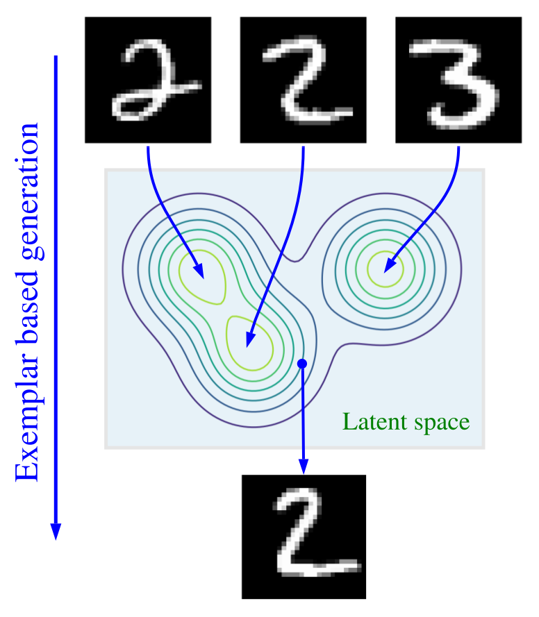

An exemplar based generative model useful for density estimation, representation learning, and generative data augmentation

Motivation
Consider the problem of conditional image generation, given a natural
language description of a scene such as
``A woman is staring at Monet's Water Lilies''.
There are two general classes of methods for addressing this problem.
One can resort to exemplar based methods, e.g., using web search engines to
retrieve photographs with similar captions,
and then editing the retrieved images to generate new ones.
Alternatively, one can adopt parametric models such as deep neural
networks optimized for text to image translation to synthesize new relevant scenes.
This paper presents a probabilistic framework for exemplar based
generative modeling using expressive neural nets. This framework
combines the advantages of both exemplar based and parametric methods
in a principled way and achieves superior results. We focus on simple
unconditional generation tasks here, but the learning formulation and
the methods developed are applicable to other applications including
text to image translation and language modeling.
Exemplar based methods depend on large and diverse datasets of
exemplars and relatively simple machine learning algorithms, such as
Parzen window
estimation and
conditional random fields . They deliver
impressive results on texture synthesis~\cite{efros1999texture}, image
super resolution \cite{freeman2002example}, and
inpaiting~\cite{criminisi2003object, hays2007scene}, despite their
simplicity. These techniques can accommodate web scale datasets with
a improvement in sample quality as the dataset size increases, without
the need for further optimization of model parameters. The success of
exemplar based methods hinges on the distance metric used to build a
local density model for each neighborhood. Unfortunately, finding an
effective distance metric in a high dimensional space is challenging
on its own~\cite{xing2003distance, johnson2016perceptual}. Further,
while exemplar based methods excel in interpolation tasks, they often
underperform their parametric counterparts in extrapolation.
Parametric generative models based on deep neural nets enable learning
complex data distributions across myriad problem
domains~(e.g., \citet{oord2016wavenet, reed2016generative}).
Predominant models, such as Variational Autoencoders
(VAEs)~\cite{kingma2013auto,rezende2014stochastic}, Normalizing
Flows~\cite{dinh2014nice, dinh2016density}, and Generative Adversarial
Networks (GANs)~\cite{goodfellow2014generative}, adopt a decoder
network to convert samples from a prior distribution, often a factored
Gaussian, into samples from the target distribution. After the
completion of training, these models discard the training data and
generate new samples using decoder networks alone. Hence, the burden
of generative modeling rests entirely on the parametric
model. Further, with the availability of additional training data,
these models require re-training or fine-tuning. %potentially
This paper investigates a general framework for {\em exemplar
based generative modeling} and a particular instantiation of this
framework called the {\em Exemplar VAE}.
To sample from the Exemplar VAE, one first draws a random exemplar from
a training dataset and then stochastically transforms that exemplar into
a new observation. We are inspired by recent work on generative models augmented
with external memory (e.g., \citet{guu2018generating, li2019forest,
tomczak2017vae, khandelwal2019generalization,
bornschein2017variational}), but unlike most existing work, we do not
rely on a prespecified distance metric to define the neighborhood
structure. Instead, we simultaneously learn a latent space and a
distance metric suited for generative modeling.
Exemplar VAE can be interpreted as a VAE with a Gaussian mixture
prior in the latent space, with one component per exemplar.
% number of components determined by the number of exemplars.
The component means are defined by the latent encoding of the exemplars.
We build on the VampPrior formulation of~\citet{tomczak2017vae},
and our work is a continuation of recent papers on enhancing VAEs
with richer latent priors~\cite{kunin2019loss, bauer2018resampled, lawson2019energy}.
The main contributions of this paper include:
\vspace*{-.15cm}
\begin{itemize}[topsep=0pt, partopsep=0pt, leftmargin=15pt, parsep=0pt, itemsep=1pt]
\item The development of the Exemplar VAE and a framework for exemplar based generative modeling.
\item The proposal of critical regularization methods, enhancing generalization of exemplar based generative models.
\item The use of approximate nearest neighbor search to formulate a lower bound on ELBO to accelerate learning.
\end{itemize}
\vspace*{-.15cm} Our experiments demonstrate that Exemplar VAEs
consistently outperform VAEs with a Guassian prior and a VampPrior on
density estimation and represenation learning. Further, unsupervised
data augmentation using Exemplar VAEs proves to be extremely
helpful, resulting in a classification error rate of $0.69\%$ on
permutation invariant MNIST.
Before diving in: if you haven’t encountered t-SNE before, here’s what you need to know about the math behind it.
The goal is to take a set of points in a high-dimensional space and find a faithful representation of those points
in a lower-dimensional space, typically the 2D plane. The algorithm is non-linear and adapts to the underlying
data, performing different transformations on different regions. Those differences can be a major source of
confusion.
This is the first paragraph of the article. Test a long — dash -- here it is.
Test for owner's possessive. Test for "quoting a passage." And another sentence. Or two. Some flopping fins; for
diving.
Here's a test of an inline equation c = a^2 + b^2. Also with configurable katex standards just
using inline '$' signs: $$x^2$$ And then there's a block equation:
We can also cite external publications. . We should also be testing footnotes
This will become a hoverable footnote. This will become a hoverable footnote. This will become a
hoverable footnote. This will become a hoverable footnote. This will become a hoverable footnote. This will
become a hoverable footnote. This will become a hoverable footnote. This will become a hoverable footnote.
. There are multiple footnotes, and they appear in the appendixGiven I have coded them
right. Also, here's math in a footnote: c = \sum_0^i{x}. Also, a citation. Box-ception! as well.